CS 171 – Final Project
Team Name: Good Grapes (GGs)
The Decider:
Rebecca Brand
Group Member 1:
Rebecca Brand
(
71481190
, rbrand@mde.harvard.edu)
Group Member 2:
Bianca Cordazzo
(91312069, be_cordazzovargas@college.harvard.edu)
Group Member 3:
Fernando Medeiros
(21413283,
fem433@g.harvard.edu
)
Abstract: Wine
We would like to explore and visualize how wine ratings are tied to their
characteristics
-
from growing the grapes, to producing different types of wine in different regions, to understanding individual brand popularity in both the United States and abroad
. We plan to start with a dataset that is originally from
Kaggle
(
https://www.kaggle.com/zynicide/wine-reviews/home
) and was scraped from
Wine Magazine’s
website in 2017. We also hope to complement this dataset with qualitative research on the current state of the wine industry that will contribute to our overall storytelling approach. A main goal of this project is to provide a visual resource for people who are curious about exploring the wine landscape but might not know where to start when they are at a liquor store or even at a restaurant. Ideally, we can offer wine recommendations to the user based on certain qualities they are seeking.
Team Agreement
We will use WhatsApp for day-to-day communication and scheduling longer Zoom collaboration sessions. Communication about trouble-shooting and problem-solving will be addressed in a timely manner on these channels.
We will meet on weeknights and weekends, with the goal of an initial Zoom meeting on each Thursday to debrief the week’s class and a follow-up Zoom meeting on Saturday or Sunday to discuss progress or finalize our group work.
We will establish a group GitHub site and upload our working files there. Although code will be written by individuals, all team members should be involved with the technical aspects of the project. All code should be documented well. Final design decisions will be discussed among all members; fair compromises should be made when necessary. Work hours should be split as evenly as possible (actual task output may differ based on an individual's ability/previous experience). As we divide the work, we will communicate with the group about what specific aspects of the project that we want to do. In turn, we will communicate early and often about concepts or implementation with which we might be struggling so that those instances don’t hold up the progress of the project.
Rebecca will be our Decider czar, Fernando will be our GitHub czar, and Bianca will be our Logistics czar. We will work together to establish both individual and shared roles and responsibilities on projects as we gain greater insight on the tasks at hand. We understand that some weeks will be busier than others for our respective schedules and will remain flexible in terms of role sharing.
We will prioritize being proactive and communicative about the expectations of our shared workload before a serious issue presents itself. In this remote setting, we are understanding of everyone’s strengths and weaknesses in this field and will prioritize working internally to find a solution. If all other options are exhausted, we will consult the TF for the class for guidance.
Signatures:
Rebecca Brand
Date: 10/28/2020
Signatures:
Bianca Cordazzo
Date: 10/28/2020
Signatures:
Fernando Medeiros
Date: 10/28/2020
Map Step
Basic Info.
The project title, your names, e-mail addresses, and your team name.
Project Title:
Good Grapes
Group Member 1:
Rebecca Brand (
71481190
, rbrand@mde.harvard.edu)
Group Member 3:
Fernando Medeiros (21413283,
fem433@g.harvard.edu
)
Team Name:
Good Grapes
Github:
https://github.com/medeirosf/CS171-Good-Grapes
Background and Motivation.
Discuss your motivations and reasons for choosing this project, especially any background or research interests that may have influenced your decision.
We previously worked together for the Design Spring, and had focused our visualization on the provided pharmacy data. None of us had a background in this area, and though we worked well together, we were not as passionate about that topic. For this project, we wanted to focus on something art, culture, or entertainment related, and would generally be more playful or fun to explore. We landed on exploring wine data because none of us are very knowledgeable about the subject but are curious to learn more and lend our diverse perspectives to the design process.
Related Work.
Anything that inspired you, such as a paper, a website, visualizations we discussed in class, etc.
Where does quality wine come from in the US?
https://medium.com/the-wine-nerd/where-does-quality-wine-come-from-in-the-us-56fb8b03b898
The Wine Nerd:
https://medium.com/the-wine-nerd
Visualizing Wine Exports by Country:
https://howmuch.net/articles/world-map-wine-exports-2019
Flavor Profiles of Different White Wines:
https://winefolly.com/tips/flavor-profiles-of-white-wines/
Other Wine Apps / Viz:
Wine Websites:
Hale, Noelle. “What Is Acidity in Wine?”
Wine Enthusiast
, Wine Enthusiast, 19 June 2019, www.winemag.com/2019/06/19/what-is-acidity-in-wine/.
Audience and Questions.
Provide a description of your audience and the primary questions you are trying to answer with your data story. Do you have any overarching goals and objectives that you want to accomplish?
-
Objectives:
A main goal of this project is to provide a visual resource for people who are curious about exploring the wine landscape but might not know where to start when they are at a liquor store or even at a restaurant. Ideally, we can offer wine recommendations to the user based on certain qualities they are seeking.
-
Audience:
The individual who is curious to learn about wine in greater depth. They might already be a foodie or have an interest in beer or spirits, but have yet to delve into the world of wine and already ask a lot of questions when they go to a wine shop.
-
Questions:
-
What were the highest rated wines of a certain year?
-
Do high ratings correspond with sales?
-
Which grape varieties have higher ratings on average?
-
Are wine varietals, such as merlot, or blends, such as burgundy, higher rated?
-
Are tasters biased toward different regions or wines?
-
What wine profiles can we create for distinct users?
-
Is there any correlation between weather conditions and wine quality?
-
What are some wine attributes and how do they correlate with quality?
Data.
From where and how are you collecting your data? If appropriate, provide a link to your data sources.
Data Cleanup.
Do you expect to do substantial data cleanup?
What quantities do you plan to derive from your data? How will data processing be implemented?
Try to minimize the amount of cleanup you have to do by finding cleaned and ready-to-go data sources whenever possible.
-
We have data sources in a couple different formats that might require some cleaning and merging for visualization.
-
Alternatively, in cases in which the merging of datasets won’t be feasible, we might try to create separate visualizations that still convey meaningful information.
-
The quantities that we plan to derive from data include wine ratings and their relation to grape varieties, weather, wine attributes (pH, alcohol, sugar, etc.), and potential taster biases.
Fernando’s Sketches
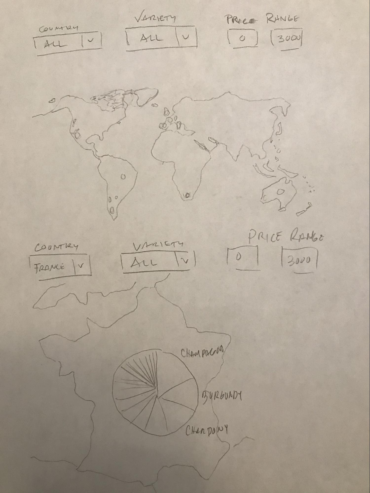
Globe map showing the count of rated wines by country and by state for the U.S.
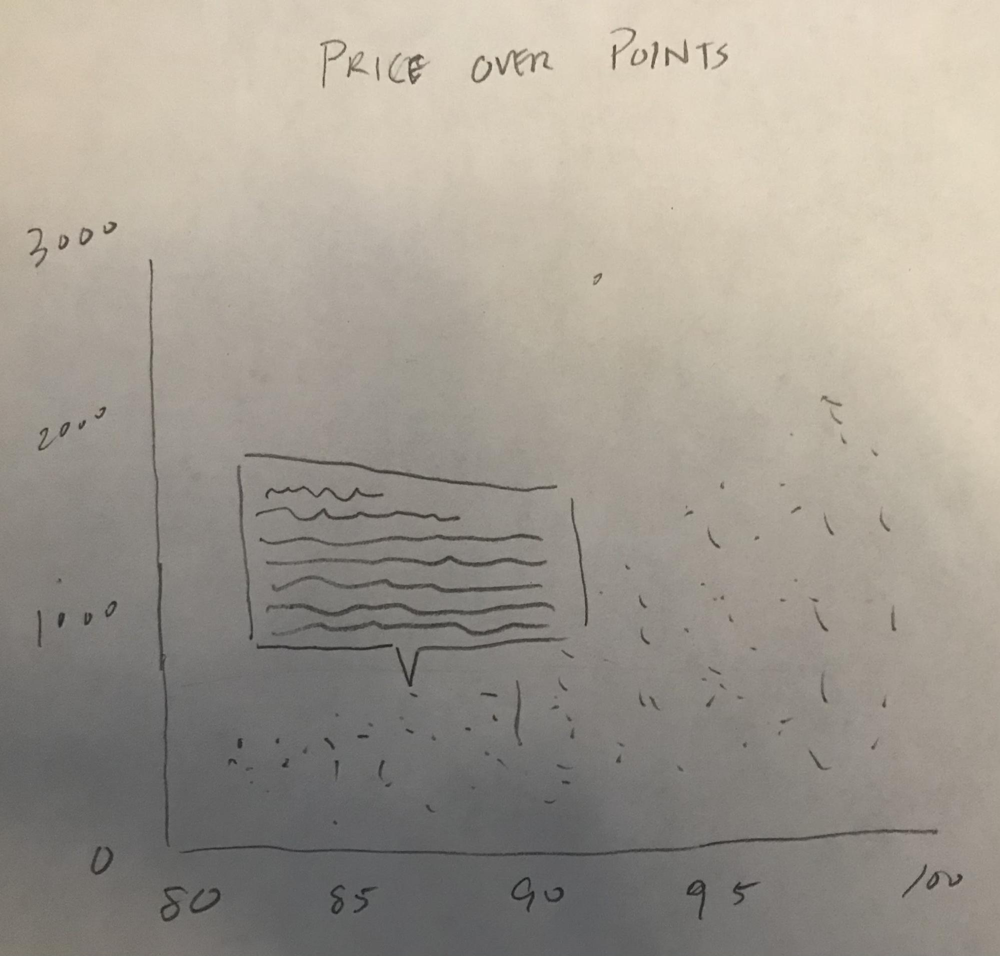
Scatterplot of individual wines by points and price. You can select a point and a popup show the information of the wine.
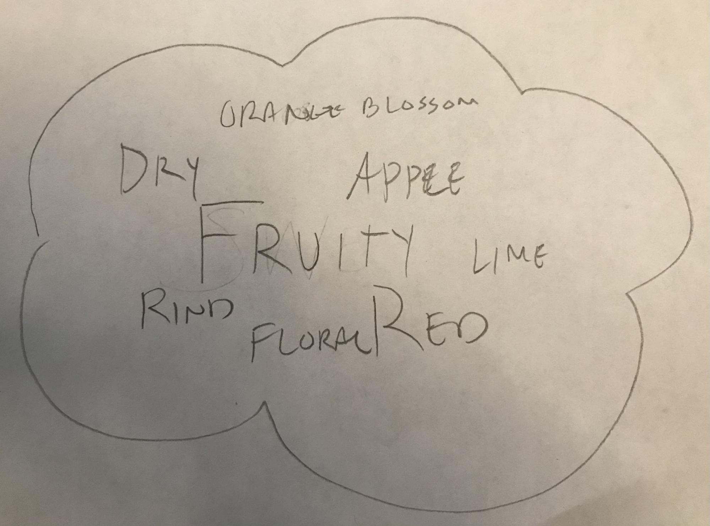
Instead of separating every word from the tasting notes and use them in a filter, which would be a lot of words. We can do a word cloud as a way to show the most common words for each variety, possibly filtered by country and price.
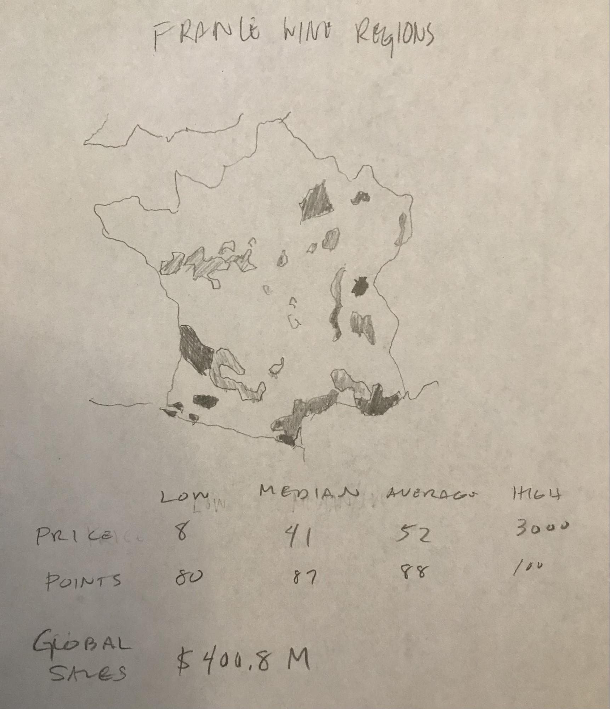
When a country is selected a n image of the country’s wine region would show with some information about the country’s wine.
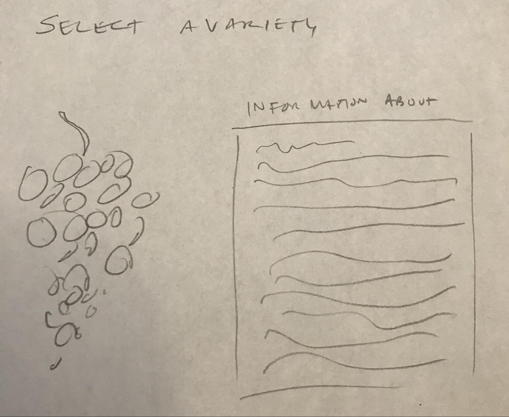
I have two ideas. (1) show an image of the variety and information about it--this would need us to gather a lot of images and data so maybe not feasible for this project. (2) display a bubble chart of the count of the different wines to represent grapes. I’m not sure if we need an info table.
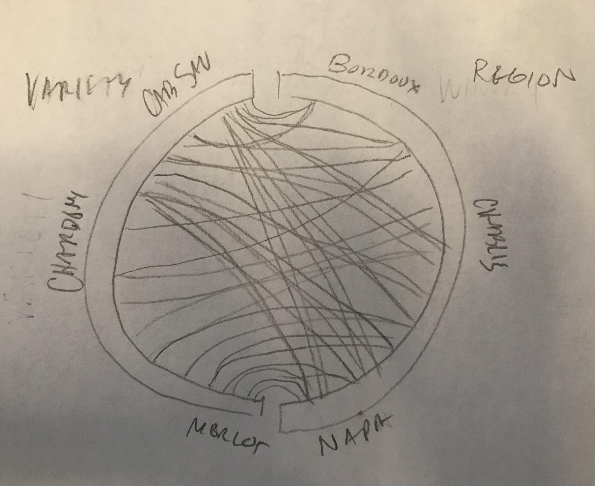
A flow chart showing which wine region the variety is grown in.
Rebecca’s Sketches
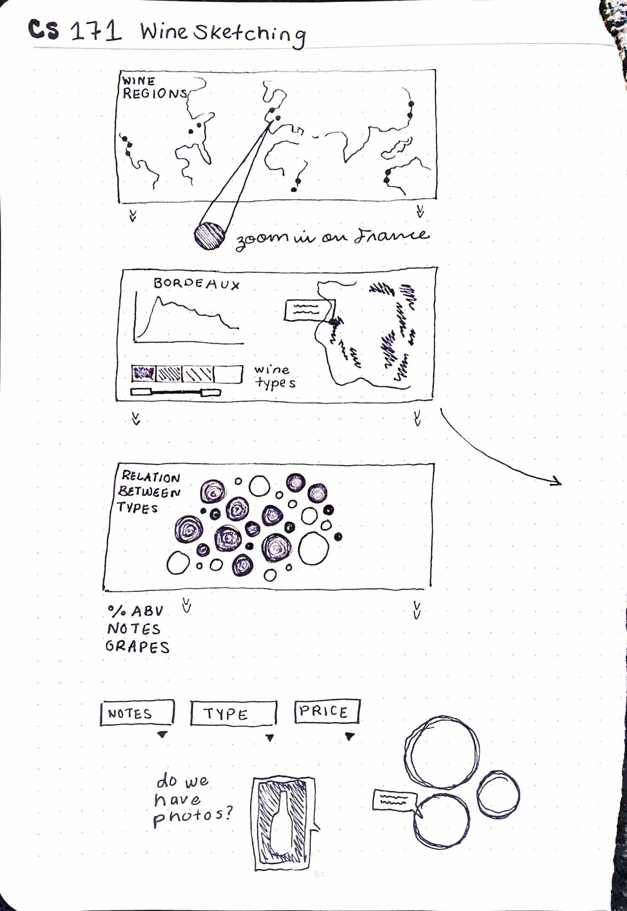
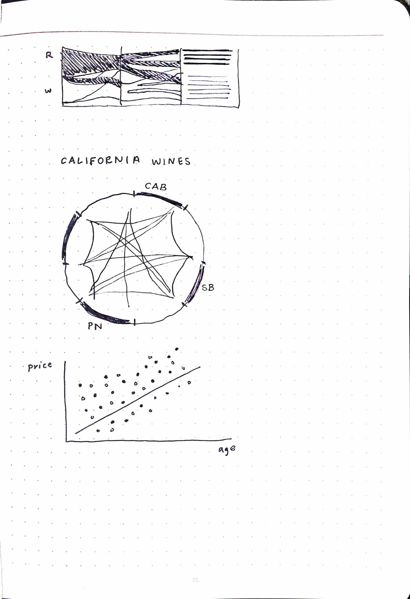
Bianca’s Sketches
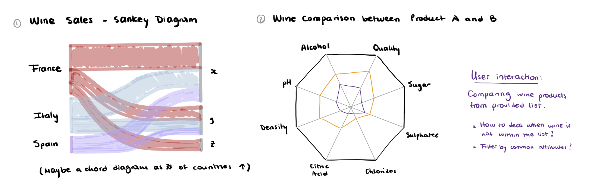
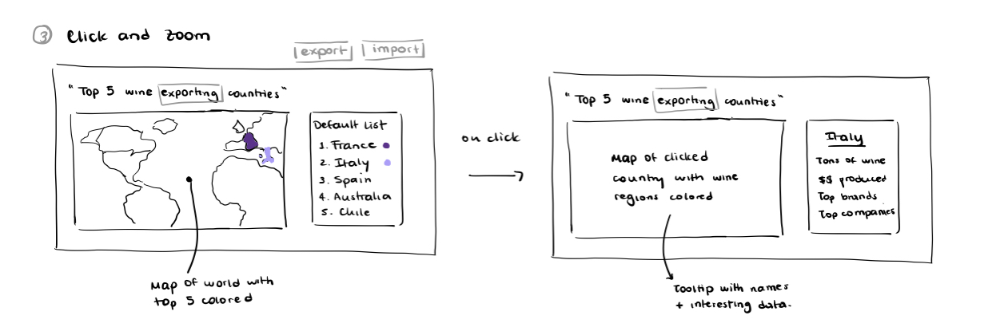
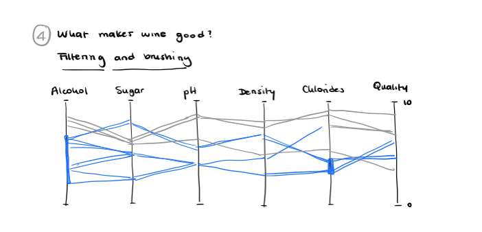
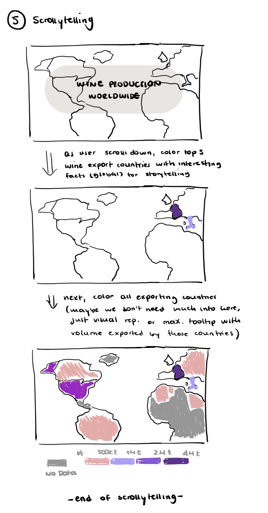
Storyboard:
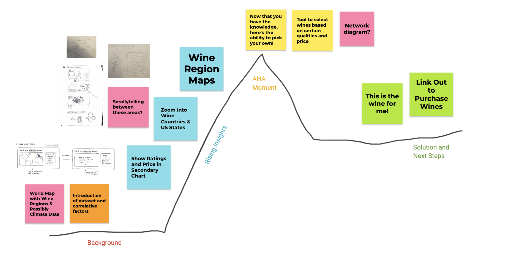
Storyboard work items:
-
Data cleaning (Fernando)
-
Used Tableau Desktop to review original data and v0.1 visualization
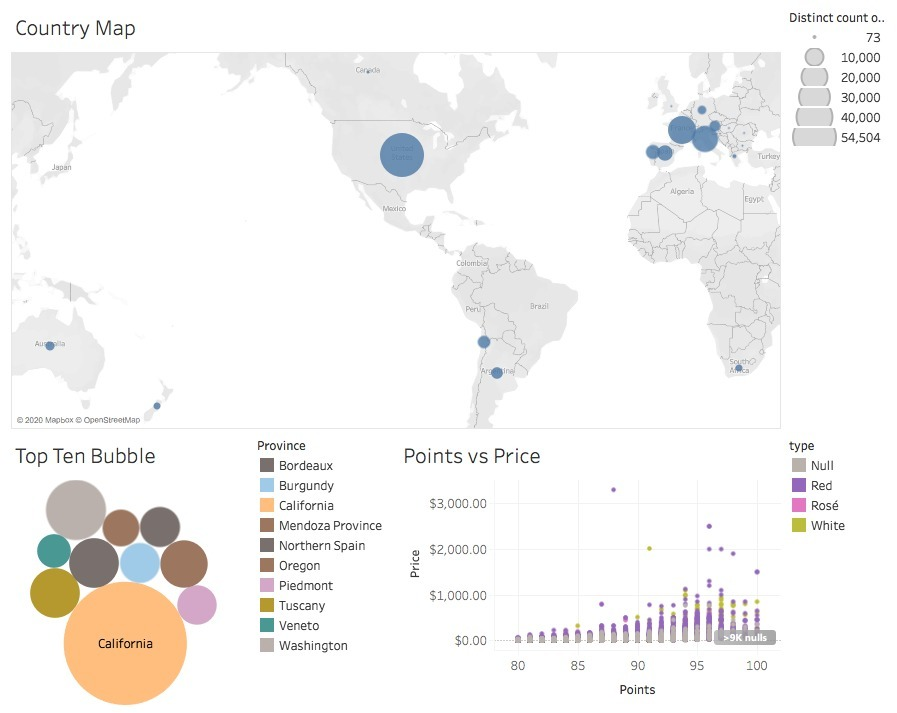
-
Used Tableau Prep to clean and create new fields.
-
Removed country data without country value or country wine region images
-
Removed records with no price (null and 0).
-
Scrolly-story (Bianca)
-
Data: geoData (
https://d3js.org/topojson.v2.min.js
)
-
Vis: maps displaying text information provided on the left
-
Text: wine information
-
Images: None
-
World map (Bianca)
-
Data: wineMagData
-
Images: country wine region images
-
Vis: World map from wineMagData with circles of number of wines
-
Need to clearly display countries with available data
-
Circle sizes recalculate when style, type, or sweetness is selected.
-
Wine Region Images (Fernando) (hint: image code from hwk 4)
-
Images: within country wine region images
-
Wine region bubbles (Rebecca)
-
Data: wineMagData
-
Vis: Circles in the shape of a cluster of grapes with the size of the circle based on the wine record count.
-
Default view is top ten wine regions (province) by number of wines
-
Selected variables from dropdown menu to filter full data
-
Price vs Points scatterplot with tooltip (Fernando) (hint: scatterplot code from lab 5)
-
Data: wineMagData
-
Vis: Scatterplot displays filtered data based on country and style, type, or sweetness
-
Default view is top ten wine regions (province) by number of wines
-
Brush/
zoom
or price & point filter when plot is displayed?
-
Selected variables from dropdown menu to filter full data
Open Questions:
-
Should we filter the data to those countries and wine regions that we have images for?
-
Delete country records that do not have a country wine region image.
Open Items:
-
Collage of all wine region images as the default image when “all countries” is selected.
-
Add a button dynamically to the scatterplot vis when data can be randomly selected. (Fernando on hold--cannot figure it out)
-
Add labels to scatterplot (us dollars)--done
-
Add shape to the style legend to match those in the scatterplot vis.--done
-
Add histograms/bars to the legends. (added to scatterplot to test)
-
Map - Bianca
-
Add a sweetness slider/legend with multi select. (to do)
-
All legends should be multi select.
-
Design choices: borders, background images, colors.
-
Finalizing text (in progress)
-
Replace bottom map with an interactive choropleth leaflet map (Bianca) --done
-
Scrollytelling (Bianca)
-
Set opacity equal to zero for default map color --done
-
Reset colors when user scrolls up --done
-
Add transition when filling colors
Think Aloud Studies (#1)
Tester Name:
Belinda Hu
Tester Email:
belindahu@college.harvard.edu
General Observations from the think-aloud study:
-
Overall, very positive response, especially with the aesthetics of the website and the color coding across visualizations.
-
It seems to be more intuitive to select a country (or countries) by clicking directly on the map rather than using a dropdown selector.
-
Color coding of the map in the dashboard was confusing (only) when selecting a country. It would be helpful to highlight only the country (or countries) selected and set the color of all other countries to black.
What does the tester like about your data story?
-
Aesthetics of the website, scrollytelling, and dashboard
-
Color coding is nice and consistent
-
Interactivity of the dashboard
What improvements does the tester point out?
-
Improve the color coding for the map in the dashboard. The color for the bottom two categories are very similar and against the black background it is hard to tell them apart.
-
Add a short paragraph somewhere explaining how to use the dashboard.
-
Add texts, footers or legends to better explain the main message of each visualization in the dashboard.
-
Since the map takes a lot of space in the dashboard, either reduce its size or tell the user to scroll down to see the results of their selections.
-
Add a description for styles, types, and sweetness levels since some people might not be familiar with them.
Was the intended key message clear to the tester? Why or why not?
The user did not have major issues exploring the website and interacting with the dashboard, but the main message was not very clear.
Did the tester get your next steps or call to action? Why or why not?
Unsure. The tester did not explicitly state the next steps or call to action.
Think Aloud Studies (#2)
Tester Name:
Tashrif Billah
Tester Email:
tbillah@bwh.harvard.edu
Feedback from the think-aloud study:
-
Leaflet icon distracting
-
Possible grammatical mistake in the first scrolling text box
-
Text boxes covering the map
-
Didn’t know to continue scrolling or stop
-
Confused about the two climates viewable once scrolled past the first
-
Axis ticks was hard to see
-
Tooltips not working on initial load. Working after selection was made
-
Charts not viewable in the entire window needed to scroll down to see the brush
-
Map legend was not discernable. Could only tell three levels, low, medium, and high
-
The Unknown text was cut off in the scatter-plot legend
-
Did not know which country was selected in the map after selection was made
-
When many selections made then changed country there were no data
-
Map title did not reference wine reviews
-
After selection was made he didn’t know what the category was
-
Didn’t understand the purpose of the bubble chart
-
Bubble chart had no legend
-
Didn’t understand the categories, such as varietal, or rose, or bone-dry
-
Didn’t know what to do with the wine region images.
What to improve from the feedback:
-
Remove leaflet icon or mute the color
-
Check grammar in first scrolling text box
-
Move scrolling text boxes to the left or right to view the map
-
To instruct on scrolling add some text to indicate to continue to scroll
-
During scrolling keep only one climate viewable on map
-
Axis ticks need to be brighter
-
Debug tooltip to show on initial load
-
Resize charts to fit in entire window
-
Reduce the categories in the map legend to three or four; suggested log scale for color
-
Move the legend to the left to fit the text
-
Highlight country in map when a country is selected
-
Add indicator of number of records
-
Add wine review to Map title
-
Selectors need name/title
-
No suggestion to improve because he didn’t understand it very well (Bubble chart needs clearer context [an abstract grape stem image to the background] and clearer title--also tooltip was displaying count of regions, should it be wine reviews?)
-
Add legend to bubble chart
-
Describe the categories and wine regions add subtitle to map to instruct how to use the charts (I think we need to make the transition from scrolling to charts less dramatic with descriptions and clear instructions)
-
Add text for instructions and/or context
Think Aloud Studies (#3)
Tester Name:
Micah Nickerson
Tester Email:
Could not find, but info on
Canvas
Feedback from the think-aloud study:
Initial Thoughts:
-
Understood introduction, would be learning about wine
-
Understood the nuances of wine making and tastes
-
Understood the different inputs relating to climate in the map
-
Tried to click the map but it was scrollytelling instead
-
Would be interesting to have a tooltip in this map section to view warm and cool climate countries
-
Dashboard has a complex series of interactions, can’t tell if they are all supposed to be the same section
-
Helpful to have the tooltip over the scatterplot showing price range versus review points
-
Confused about the section on acidity in wine, could be shown with a graphic
-
For maps in dashboard -- looks like they’re all in French, confused by this
-
Assuming the maps are about climate as well
Discussion after Testing:
-
Could be helpful to employ a card based system, lets the view only see discrete information when scrolling
-
Currently unable to pick by acidity, but there is a lot of text dedicated to it
-
Don’t totally understand the points rating, would be helpful to understand the dataset
-
Want more information about tastes
-
Thinks type is more important to emphasize than style
-
Could have the visualization lead with flavors the viewer is interested in exploring, then go from there
-
Main map and scatterplot should switch positions
-
Should make lower prices more prominent
What to improve from the feedback:
-
Reorganize information in the dashboard setting
-
Introduce the dataset earlier in the storyline
-
Incorporate interactivity within the scrolly map
-
Emphasize the user’s ability to explore the types of wine they like
--- Together ---
-
Based on the results of your ‘think aloud’ study, what would you improve in your data story?
-
Overall storytelling flow and explanation of dataset and wine attributes used
-
Visual hierarchy in platform section to emphasize what the user should gravitate towards
-
Diverse and logical use of channels and markers
-
Are there any other insights and visualizations you would use? Would you amplify or change your message? Did your narrative work? Did the tester get your takeaways?
-
The narrative generally worked but could offer more clues as to how the user should use the platform
-
Could use card-based system during scrollytelling so the user never stops between sections
-
Decide as a team which of these improvements you will implement next week and write down your decisions and why you made them in your process book.
-
Decided to edit fonts/colors to create better cohesion
-
Chose to switch world map and scatterplot hierarchies to emphasize the relationship between choosing wine types and seeing reviews
-
Editing tooltip to offer clearer information
-
Include histogram selectors to make choices more obvious to the viewer
-
Include navigation bar to allow viewer to toggle between sections